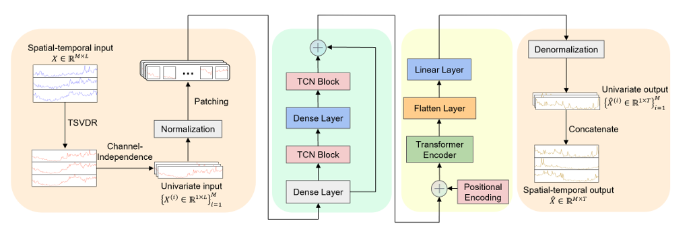

Data Scientist
CyberAgent, Inc. · Part-time
Currently affiliated with AI Tech Studio. AI Tech Studio に所属。

M.S. Student at Kanazawa University 金沢大学 大学院 自然科学研究科 修士2年
Email: a2276623357 [at] gmail [dot] com
I am currently a second-year Master's student at Kanazawa University (Japan), majoring in Electronic Information and Communication. I am a member of the NVIDIA-ICNL Joint Laboratory.
My research interests center on Deep Learning and Large Language Models (LLMs), specifically for time-series forecasting, spatio-temporal modeling, and multi-modal analysis.
現在、金沢大学大学院 自然科学研究科 電子情報通信学専攻の修士2年です。NVIDIA-ICNL Joint Laboratory に所属しています。
主な研究興味は、深層学習および大規模言語モデル (LLM) を用いた、時系列予測・時空間モデリング・マルチモーダル分析です。
CyberAgent, Inc. · Part-time
Currently affiliated with AI Tech Studio. AI Tech Studio に所属。
Part-time · 5 mos
Large Language Model Operations (LLMOps)
Development, DevOps and QA Testing for AI Agents on Natural AI Phone. Natural AI Phone 向けAIエージェントの開発、DevOps、QAテスト。
Quality Assurance
Hitachi · Internship
Research and Development of Communication Quality Prediction using ML and DL Models. ML・DLモデルを用いた通信品質予測に関する研究開発。
Research and Development (R&D), Machine Learning
Hitachi · Internship
Research and Development of Multimodal Time-Series Analysis Techniques using LLMs. LLMを用いたマルチモーダル時系列分析技術に関する研究開発。
Research and Development (R&D), Large Language Models (LLM)

IEEE Global Communications Conference (GLOBECOM), 2025
Proposed an efficient spatio-temporal network traffic forecasting framework; accepted at IEEE GLOBECOM 2025. Includes paper, DOI, and presentation slides. 効率的な時空間ネットワークトラフィック予測フレームワークを提案し、IEEE GLOBECOM 2025 に採択。論文、DOI、発表スライドを公開。
Jan 2026 | Tokyo, Japan
Built ML/DL models for communication quality prediction under real-world network constraints. Focused on feature design, model comparison, and evaluation reliability. 実ネットワーク制約下での通信品質予測に向けてML/DLモデルを構築。特徴量設計、モデル比較、評価の信頼性に注力。
Aug 2025 - Sep 2025 | Tokyo, Japan
Extended LLM-based time-series analysis from static dataset-level prompts to timestep-level multimodal signals. Built experiments around Time-LLM, text-aware forecasting, and benchmark evaluation. LLMベースの時系列分析を、静的なDataset-level promptからTimestep-levelのマルチモーダル信号へ拡張。Time-LLM、テキスト活用予測、ベンチマーク評価を中心に実験を構築。